library(autoReg)
library(survival)
#library(survminer)
#library(howto)
#library(flextable)
#library(ftExtra)
#library(tidyverse)3 Cox 비례위험모형(PH model)
모수적 모형은 분포에 대한 가정이 타당할 때는 효율적이지만 어떤 모형이 적당한가에 대한 사전 지식 없이 사용하기 어려움
Cox의 비례위험모형(proportional hazards model)은 준모수적(semi-parameteric) 방법으로써 생존시간의 분포에 대한 가정을 필요로 하지 않음
Cox PH 모형은 시간에 따라 바뀌는 공변량(time-dependent variable)의 경우에도 분석할 수 있음
생존자료의 분석에서 자주 사용되는 모형으로 Cox 회귀분석(Cox regression analysis) 이라고도 함
3.1 Cox PH model
- 생존시간을 \(T\), 영향을 주는 \(p\)개의 공변량 \(x_1, \ldots, x_p\)이 있을 때, Cox PH model:
\[ \lambda(t)=\lambda_0(t)exp(\beta_1 x_1+\cdots +\beta_p x_p) \]
여기서 \(\lambda(t)\)는 공변량들을 고려했을 때의 위험함수(hazard function), \(\lambda_0(t)\)는 기저위험함수(baseline hazard function) (예를 들어 공변량의 값들이 모두 0일 때의 위험함수의 값)
콕스 PH 모형의 기저위험함수 \(\lambda_0(t)\)는 모수적 가정을 하지 않으므로 준모수적 방법이며, 콕스 모형의 중요한 특징 중 하나임
콕스 모형이 널리 사용되는 가장 중요한 이유는 기저위험함수의 분포에 대한 가정 없이도 회귀계수 및 위험비를 잘 추정해주고, 다양한 데이터에서 보정된 생존곡선을 그릴 수 있는 장점 때문
콕스 모형은 매우 강건(robust)하기 때문에 정확한 모수적인 모형의 추정 결과와 근접한 결과를 얻을 수 있음
- 기저위험함수에 대한 정확한 모수적 모형을 알 수 있는 경우에, 콕스 모형을 통한 분석 결과는 모수적 모형의 결과와 매우 유사함
3.1.1 Simple regression
Semi-parametric
\[ \lambda(t;z)=\lambda_0(t)e^{z\beta} \]
where \(\lambda_0(t)=\lambda\) is called baseline hazard function.
- Baseline hazard function does not depend on \(z\).
- i.e. the hazard function corresponding to individuals with covariate \(z=0\).
- \(z\): covariate vector
- \(\beta\): regression parameters
- \(\lambda_i(t; z)\): the hazard function for individual \(i\) at time \(t\).
- The covariate act multiplicatively on the hazard function.
- The multiplicative effect of the regression variables on the hazard.
- The hazard function for individual \(i\) at time \(t\) is the product of two factors
- a baseline hazard function \(\lambda_0(t)\) that is left “unspecified”, except that it can not be negative.
- a linear function if a set of \(k\) fixed covariates which is then exponentiated.
- Given regression form
\[ \frac{\lambda_i(t;z_1)}{\lambda_j(t;z_2)}=\frac{\lambda_0(t)e^{z_1\beta}}{\lambda_0(t)e^{z_2\beta}}=e^{(z_1-z_2)\beta} \]
constant over time, only depends on \(\beta\).
If \(z_1-z_2\) is constant then we assume \(z_i\)’s are time independent.
The ratio of the hazard is constant over time.
The hazard ratio is called the relative risk of \(z_1\) vs \(z_2\).
- e.g) \(z_1\)=male, \(z_2\)=female
If we graph the log hazard for nay individuals, the proportional hazard property implies that the hazard function should be strictly parallel.

- Cumulative hazard:
\[ \Lambda(t; z)=\int_o^t \lambda_0(u)e^{z\beta}du=e^{z\beta}\lambda_0(t) \]
- Survival function:
\[ S(t;z)=e^{-\Lambda(t;z)}=e^{-\Lambda_0(t)e^{z\beta}}=[e^{-\Lambda_0(t)}]^{e^{z\beta}}=[S_0(t)]^{e^{z\beta}}=[S(t;0)]^{e^{z\beta}} \]
\(S_0(t)\) is a baseline survival function.
- Cox (1972): Regression models and life tables (JRSS B, V.34, 187-220) proposed using the model \(\lambda(t;z)=\lambda_0(t)e^{z\beta}\), where \(\lambda_0(t)\) is unspecified.
Cox’s Regression (proportional hazards model)
Cox’s method does not require that you choose some particular probability distribution to represent survival times.
- Semi parametric, hence robust
Cox regression makes it relatively easy to incorporate time-dependent covariates,that is, covariates that may change in value over the course of the observation period.
Cox regression permits a kind of stratified analysis that is very effective in controlling for nuisance parameters.
Cox regression makes it easy to adjust for perilds of time in which an individual is not at risk of an event.
Cox regression can readily accommodate both discrete and continuous measurement of event times.
Cox (1972) proposed a new estimation that was later named partial likelihood or more accurately maximum partial likelihood.
- The term Cox regression refers to the combination of the model and the estimation method.
Regression model
- Two major purpose of regression:
- Control or intervention
- Prediction
- Identifying prognostic factor or risk factor.
- Prognosis i.e., the prediction of the future of the individual patients.
Find the relationship between survival time and independent variables or covariates measured from patients.
Prediction concerning a patient survival probabilities, conditional on his/her covariate values.
- Effects of a factor on a patient’s survival time are measured by the relative risk.
- Binary covariate
\[ X_i=\begin{cases} 0, \,\,\, non-exposed \\ 1, \,\,\, exposed \\\end{cases} \]
\[ \lambda(t;x_i=0)=\lambda_0(t) \]
\[ \lambda(t;x_i=1)=\lambda_0(t)e^{\beta} \]
- relative risk or hazard rate: relative risk of exposure exposed vs non-exposed
\[ \frac{\lambda(t;x_i=1)}{\lambda(t;x_i=0)}=\frac{\lambda_0(t)e^{\beta}}{\lambda_0(t)}=e^{\beta} \]
\(\beta\): the value of the relative risk on the log scale.
\(\beta\)가 양의 부호를 가질 때, 위험함수의 값이 커지므로 변수의 값이 클수록 위험이 크다는 뜻이며, 따라서 예후가 나쁨을 의미함
\(\beta<0\): 수치의 절대값이 커질수록 예후가 좋음
- Continuous variable
\[ \lambda(t;X=x)=\lambda_0(t)e^{\beta x} \]
\[ \lambda(t;X=x+1)=\lambda_0(t)e^{\beta (x+1)} \]
\[ \frac{\lambda(t;X=x+1)}{\lambda(t;X=x)}=e^{\beta} \]
The relative risk due to one unit increase in the value of \(X\), \(X=x\) vs. \(X=x+1\).
For \(m\) units increase in the value of \(X\) say \(X=x+m\) vs. \(X=x\), the corresponding relative risk is \(e^{m\beta}\).
\(\hat{R.R}=e^{\hat{\beta}}\)
95% confidence interval(CI): \(exp(\hat{\beta}\pm 1.96\times SE(\hat{\beta}))\)
Partial likelihood construction
\(n\) independent individuals (\(i=1,2, \ldots, n\))
For each individual \(i\), the data consist of three parts (\(t_i, \delta_i, z_i\))
\(t_i\): The time of event or the time of censoring (i.e., the observed survival time)
\[ \delta_i=\begin{cases} 1, \,\,\, uncensored\\ 0, \,\,\, censored \end{cases} \]
- Partial likelihood: the product of the likelihoos for all events that are observed.
- Thus if the \(J\) is the number of events,
\[ PL=\prod_{j=1}^J L_j \]
where \(L_j\) is the likelihood for the \(j^{th}\) event.
What is the probability that it happened to patient 1 rather than to one of the other patients?
Ans=(the hazards for patient 1 at t1) / (the sum of the hazards for all patients who were at risk of death in the same t1)
\[ \frac{\lambda(t_{(j)};x_j)dt}{\sum_{l\in R(t_{(j)})}\lambda(t_{(j)};x_j)dt} = \frac{e^{x_{(j)}\beta}}{\sum_{l\in R(t_{(j)})}e^{x_{(j)}\beta}} \]
\(\lambda(t_{(j)};x_j)dt\): the probability that an individual with covariate \(x\) fails in a small interval \((t, t+dt)\), given the set at risk at \(t\).
\(t\) is non-informative; semi-parametric
The partial likelihood depends on only the order of the event time, not on their exact value.
Property
You get estimates by finding values of \(\beta\) that maximize the partial likelihood.
The partial likelihoods are consistent and asymptotically normal.
In other words, in large samples they are asymptotically unbiased and their sampling distribution is approximately normal.
Another interesting property of partial likelihood estimates is that they depend on only the ranks of the event times, not their numerical values.
Interpretation of the hazards ratio (상대위험도) \(e^{\hat{\beta}}\)
- For indicator (dummy) variables with values of 1 and 0,
- \(e^{\hat{\beta}}\): the ratio of the estimated hazards for those with a value of 1 to the estimated hazard for those with a value 0 (controlling for the other covariates)
- e.g) the estimated hazard ratio for the variable FIN (financial aid) is 0.685.
- The hazard of arrest for those who received financial aid is only about 69/% of the hazard for those who did not receive aid (controlling for the other covariates)
- For quantitative covariates,
- For quantitative covariates, a more helpful statistic is obtained by subtracting 1.0 from the risk ratio and multiplying by 100.
- This gives the estimated
in the hazard for each one-unit increase in the covariate e.g) For variable AGE, the risk ratio is 0.944, which yields 100(0.944-1)=-5.6. Therefore, for each one-year increase in the age at release, the hazard of arrest goes down by an estimated 5.6 percent.
- This gives the estimated
3.1.2 Multiple regression
- \(\lambda(t;z)=\lambda_0e^{z\beta}\), \(z^T=(z_1,z_2,\ldots,z_p)\), \(\beta^T=(\beta_1,\beta_2,\ldots,\beta_p)\)
Best model selection in Cox-regression model
- Univariate analysis
- Cox 모형에서best model selection
- Cox 모형의 비례성 가정 검토
- Cox 모형에서 치료효과에 대한 평가가 목적일 때 모형선정 방법
\[ 변수 \begin{cases} 치료변수 - variable\,\,\, of \,\,\, interest \\ 예후변수 - covariates\\ \end{cases} \]
\(T\) <- 치료변수(고정): 관심변수
Covariate \(X=(X_1, X_2, \ldots, X_p)\): \(T\)를 제외한 \(p\)개 변수 중 유의한 \(q\)개의 변수를 찾아냄
모형 선정 과정
- 치료효과에 대한 유의성 검정
(1-1) 중요한 예후 변수 선택
- 단일 분석에서 전체 환자군 중 유의한 예후 변수 선택
- 또는 각 치료군의 환자자료에서 단일 분석으로 유의한 예후 변수를 각각 알아내에 어느 한 치료군에서라도 유의하면 이들 모든 변수 선택
(1-2) 치료변수를 제외하고서 (1-1)에서 밝혀진 유의한 예후변수로써 multiple regression 모형에 의해 적합한 모형을 찾는다.
(1-3) (1-2)의 모형에서 치료변수를 추가하여 변수들의 유의성 조사
- Univariate analysis에서 \(\alpha\)는 0.1 또는 0.2를 사용함
- Strictly하게 \(\alpha\)를 정하면 선택변수가 너무 줄어들기 때문에 conservative 하지 않게 하기 위해 0.1 또는 0.2를 사용
(1-4) 치료변수만의 모형과 (1-3)의 모형과 비교하여 치료변수에 대한 다른 변수들의 영향 조사
- 치료효과에 대한 교호작용 검정
- 공변량의 각 수준에 따라 치료효과가 다를 때 치료변수와 공변량은 교호작용이 존재함
- 예를 들어, 공변량으로서 성별이 있을 때 남성환자의 경우 두 치료군의 생존율의 차이가 두드러지거나 여성환자의 경우에는 두 치료군의 생존률의 차이가 없어서 두 치료군에 의한 생존율의 차이의 정도가 남성과 여성에서 다를 때,
- 또는 남성환자의 경우 만약 첫째 치료군의 생존율이 높으나 여성환자의 경우에는 둘째 치료군의 생존율이 높을 때 이는 성별에 따라 치료효과가 다름을 의미
- Hierarchical principle: 교호작용이 모형에 삽입된 경우, 두 공변량의 단순 효과도 반드시 모형에 삽입함
- 비례성 가정에 대한 검토
Cox 모형은 비례성 위험 함수를 가정함. 따라서 Cox 모형 이용시 이 가정이 성립하는 지 살펴봐야 함
비례성 위험 함수 모형에서 비례성 가정이 충족되지 않는 경우
- 공변량의 효과가 시간에 따라 변함
- 모형에 삽입되어야 할 공변량이 제외되었거나
- 유의한 교호작용이 모형에서 제외된 경우
- 위험함수가 \(\lambda(t;z)=\lambda_0(t)e^{z\beta}\)와 같은 지수 형태가 아닌 다른 형태일 경우
(3-1) 비례성 가정 검토방법
1. 그래프 이용
2. Time-dependent covariate 변수에 대한 검정 통계량 이용
3. 잔차 검토
(3-2) LLS 그래프로서 비례성 가정 검토방법
- 검토하고자 하는 공변량이 하나일 때 그 공변량의 값에 따라 나누어진 각 부분군의 Kaplan-Meier 생존률 \(S(t)\)를 구한 후 이를 이용하여
\[ log(-log(S(t))) \,\,\, vs. \,\,\, t \]
LLS 그래프를 그림
- 만약 이미 비례성 가정이 성립하고 공변량 \(x\)가 있으면서 또 다른 공변량의 비례성 가정을 검토하는 경우에는
\[ log(-log(S(t;\bar{x}))) \,\,\, vs. \,\,\, t \]
를 그림. 여기서 \(\bar{x}\)는 가정을 검토하여 나누어진 부분군에 속한 환자들의 \(x\) 평균값
- LLS 그래프가 직선이든 곡선이든 대체적으로 평행한 패턴을 보이면 그 공변량은 비례성 가정에 적합하다고 봄

3.1.3 위험비(hazard ratio) 계산
위험비는 어떤 대상의 위함을 다른 대상의 위험으로 나눈 값
어떤 대상의 설명변수들을 \(X^*\)라 하고 다른 대상의 설명변수들을 \(X\)라고 하면 추정된 위험비는 다음과 같음
\[ \hat{HR}=\frac{\hat{\lambda}(t,X^*)}{\hat{\lambda}(t,X)} \]
- 위험비의 식을 기저위험함수와 지수식의 곱으로 표현하면, 기저위험함수는 약분되어 사라지고 지수식만 남게 됨
\[ \hat{HR}=exp(\sum_{i=1}^p \hat{\beta}(X_i^*-X_i)) \]
위험비의 계산에서 시간에 따라 변화하는 기저위험함수가 사라지고 설명변수와 회귀계수만 남게 됨
즉, 위험비는 시간이 변하더라도 변하지 않고 일정함을 의미함. 따라서 콕스의 위험비를 “비례위험”이라고 함
Example
AutoReg 패키지에 포함되어 있는 anderson 데이터를 사용하여 콕스 PH 모형을 적합 하면 다음과 같음
anderson 데이터는 백혈병 환자 42명의 데이터로 대조군(rx=1)과 치료군(rx=0)의 재발(status=1)까지의 시간[time, 단위: 주수(week)]을 기록한 생존데이터이다. 이 데이터에는 성별(sex 0:Female, 1:Male)과 로그백혈구 수(logWBC)가 포함되어 있다.
필요 패키지 로드
fit=coxph(Surv(time,status)~rx+logWBC,data=anderson)
summary(fit)Call:
coxph(formula = Surv(time, status) ~ rx + logWBC, data = anderson)
n= 42, number of events= 30
coef exp(coef) se(coef) z Pr(>|z|)
rx 1.3861 3.9991 0.4248 3.263 0.0011 **
logWBC 1.6909 5.4243 0.3359 5.034 4.8e-07 ***
---
Signif. codes: 0 '***' 0.001 '**' 0.01 '*' 0.05 '.' 0.1 ' ' 1
exp(coef) exp(-coef) lower .95 upper .95
rx 3.999 0.2501 1.739 9.195
logWBC 5.424 0.1844 2.808 10.478
Concordance= 0.852 (se = 0.04 )
Likelihood ratio test= 46.71 on 2 df, p=7e-11
Wald test = 33.6 on 2 df, p=5e-08
Score (logrank) test = 46.07 on 2 df, p=1e-10- 위 모형과 같이 rx의 변화에 따른 위험비는 다음과 같음. 이때 모형에 같이 적용된 logWBC는 두 개체간 같은 값을 가진다고 가정함
\[ \hat{HR}=exp(1.3861(1-0)+1.6909(logWBC-logWBC))=exp(1.3861)=3.999 \]
- 따라서 rx=0인 경우보다 rx=1인 경우에 위험도는 3.999배 높다고 할 수 있음
- 마찬가지로 rx가 같은 경우 logWBC 값이 1 증가할 경우 위험도는 5.424배 높아짐
**** 추가설명 {-}
양변에 로그를 취하고 \(\alpha(t)=log\lambda_0(t)\)로 놓으면 \[log \lambda(t)=\alpha(t)+\beta_1x_1+\cdots+\beta_px_p\]
만약 \(\alpha(t)=\alpha_0\)로 놓으면 지수모형과 같은 형태
만약 \(\alpha(t)=\alpha_0 + \alpha t\)로 놓으면 곰페르츠 모형과 같은 형태
만약 \(\alpha(t)=\alpha_0 + \alpha logt\)로 놓으면 와이블 모형과 같은 형태
Cox 모형은 분포의 선택이 필요하지 않으며, \(\alpha(t)\)의 형태가 어떤 것이든 무관
"비례위험모형"의 의미는 어느 환자의 위험률과 다른 환자의 위험률의 비가 시간에 대해 일정하다는 것을 의미
예를 들어, \(i\)번째 환자와 \(j\)번째 환자의 위험함수의 비는
\[\lambda_i(t)/\lambda_j(t)=exp(\beta_1(x_{i1}-x_{j1})+\cdots+\beta_p(x_{ip}-x_{jp}))\]
가 되어 기저위험함수는 상쇄되어 없어지고 위험함수의 비는 시간에 대해서 상수로 됨
- 비례위험의 가정이 맞다면, 두 환자에 대해 시간 \(t\)에 따른 \(log\hat{\Lambda}(t)\) 또는 \(log(-log\hat{S}(t))\)의 그래프가 평행하게 되어야 함
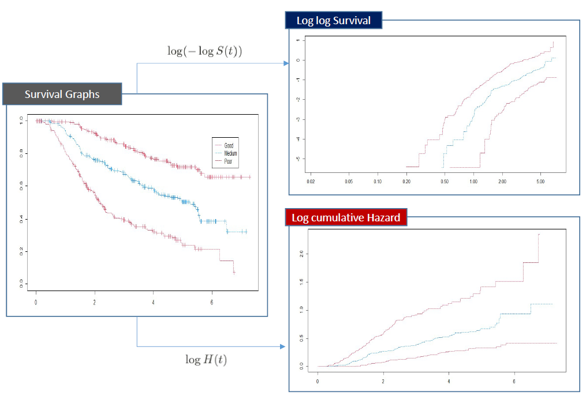
3.2 콕스 PH 모형을 이용한 보정된 생존곡선
- anderson 데이터에서 rx에 따른 K-M 생존곡선은 다음과 같음
fit=survfit(Surv(time,status)~rx,data=anderson)
plot(fit, mark.time=T, col=1:2, lty=1:2)
legend("topright",c("rx=0","rx=1"), col=1:2, lty=1:2)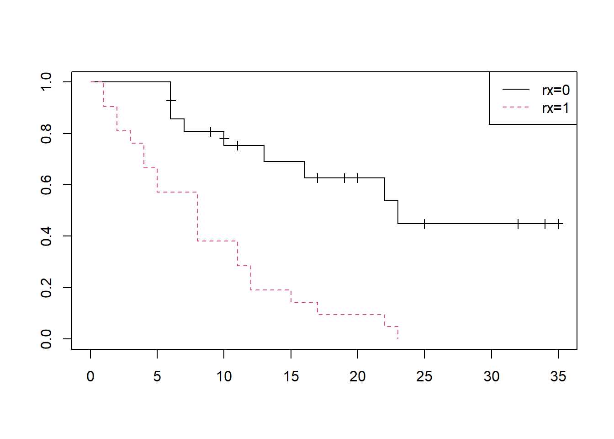
logWBC의 효과를 보정하고 rx에 따른 생존곡선을 그리려면 먼저 그림을 그릴 새로운 데이터를 생성해야 함
이때, rx의 값과 logWBC의 값을 정해주어야 하며, logWBC의 중앙값을 적용함
fit=coxph(Surv(time,status)~rx+logWBC,data=anderson)
rx=c(0,1)
logWBC=median(anderson$logWBC)
newdata=data.frame(rx,logWBC)
plot(survfit(fit,newdata=newdata),col=1:2,lty=1:2)
legend("topright", legend=c("rx=0","rx=1"), col=1:2, lty=1:2)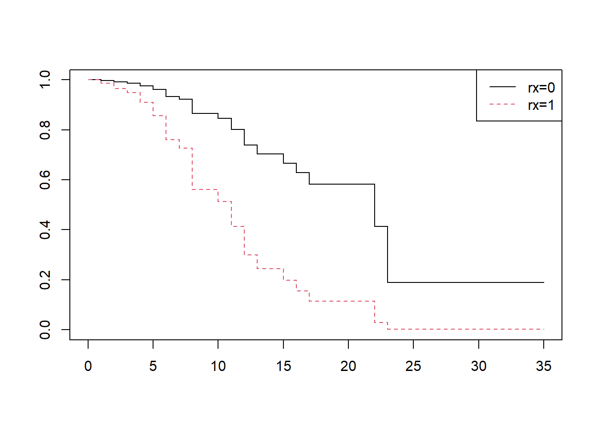
- R의 autoReg 패키지 내 adjustedPlot을 이용하여 보정된 생존곡선을 그리는 것이 가능함
fit2=coxph(Surv(time,status)~rx+logWBC,data=anderson)
adjustedPlot(fit2,xnames="rx", mark.time=T, show.median=T)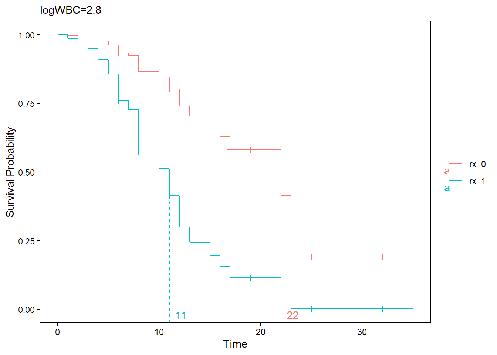
- 설명 변수가 여러 개 있는 경우에도 보정된 생존곡선이 가능
data(cancer,package="survival")
fit=coxph(Surv(time,status)~rx+sex+age+differ,data=colon)
adjustedPlot(fit,xnames=c("rx"))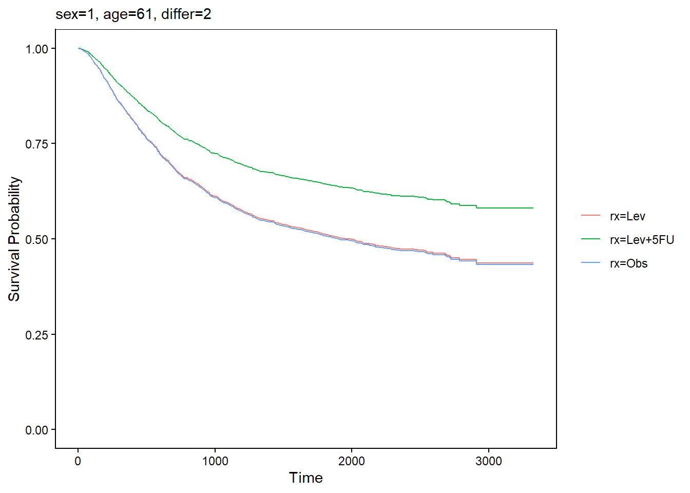
3.3 비례위험 가정 평가
- 비례위험 가정을 평가하는 방법으로 1) 그래프를 이용하는 방법, 2) 적합도 검정을 이용하는 방법, 3) 시간의존 공변량을 사용하는 방법 등이 있음
3.3.1 그래프를 이용하는 방법
- 비례위험 가정을 평가하는 방법 중 그래프를 이용하는 방법은 1) 로그-로그(log-log) 생존곡선을 비교하는 방법, 2) 관찰생존곡선-기대생존곡선을 비교하는 방법이 있다.
로그-로그 생존곡선 그림
두 그룹 간의 생존을 비교할 때 콕스비례위험 가정하에 두 그룹의 생존은 다음과 같음 관계를 가짐
\(S_0\)를 첫번째 그룹의 생존, \(S_1\)을 두 번째 그룹의 생존, \(exp(\beta)\)를 비례위험상수라 하면
\[ S_1(t)=S_0(t)^{exp(\beta)} \]
- 양변에 로그를 취하면
\[ log(S_1(t))=exp(\beta) \times log(S_0(t)) \]
- 생존함수는 1보다 작으므로 생존함수의 로그는 음수값이 됨. 양변에 -1을 곱한 후 다시 양변의 로그를 취하면
\[ log(-log(S_1(t)))=\beta + log(-log(S_0(t))) \]
- 따라서 비례위험 가정이 맞으면, 로그-로그 곡선은 \(\beta\) 크기만큼 차이를 두고 평행해야 함
fit=survfit(Surv(time,status)~rx,data=anderson)
loglogplot(fit)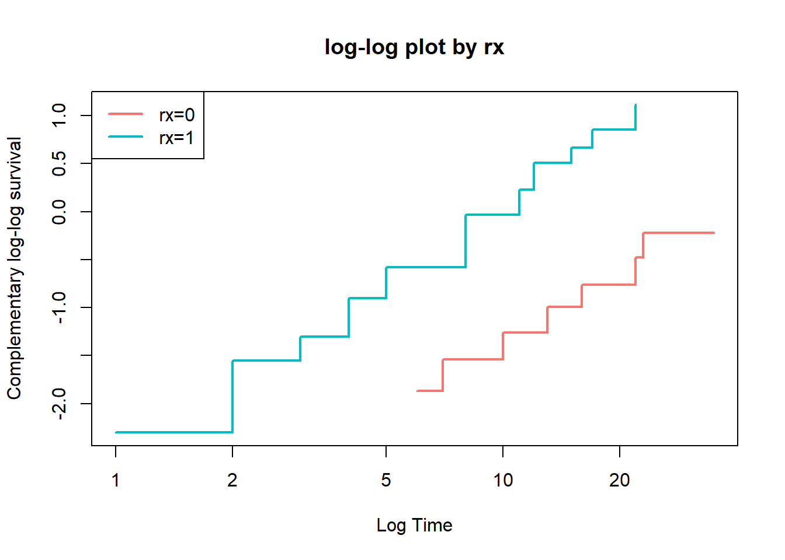
- anderson 데이터에서 sex를 설명변수로 하는 모형의 비례위험가정을 살펴보면
fit1=survfit(Surv(time,status)~sex,data=anderson)
loglogplot(fit1)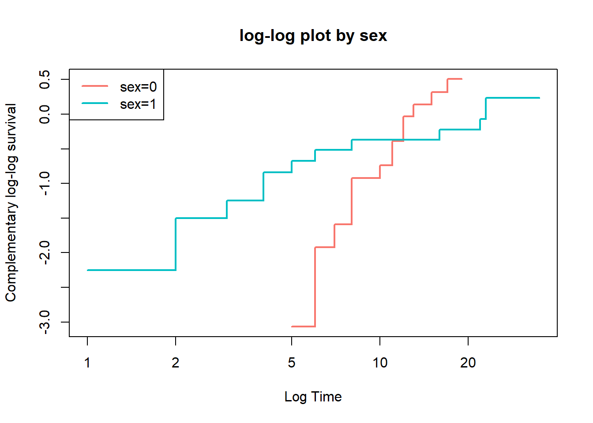
남자(sex=0)와 여자(sex=1)의 로그-로그 생존곡선이 서로 교차하기 때문에 비례위험 가정이 맞지 않음
logWBC에 대해서, logWBC는 연속형 변수이기 때문에 그룹으로 나누어 살펴보아야 함
fit2=survfit(Surv(time,status)~logWBC,data=anderson)
loglogplot(fit2)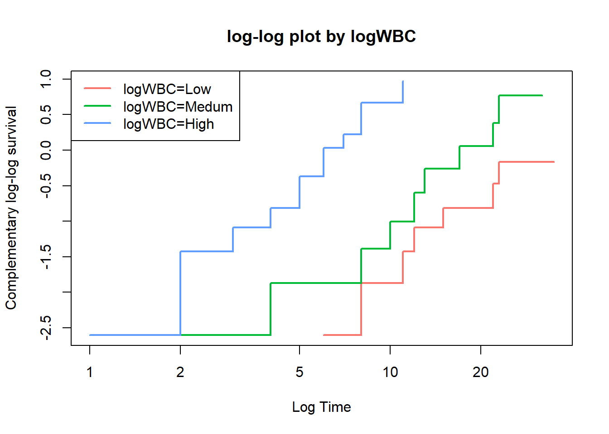
fit3=survfit(Surv(time,status)~rx+logWBC,data=anderson)
loglogplot(fit3,no=2)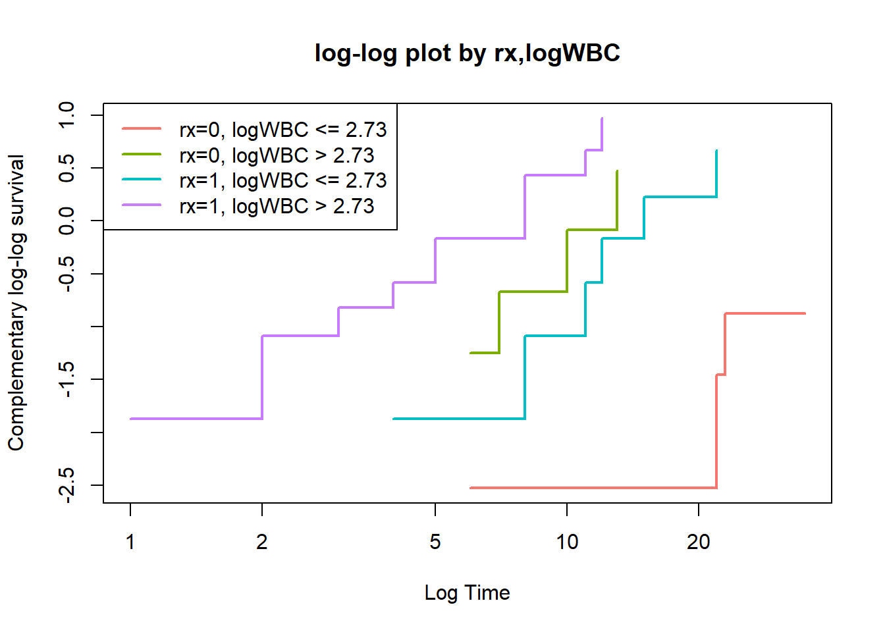
로그-로그 생존곡선을 이용하여 비례위험 가정을 평가하는 방법은 직관적이기는 하지만 통계적 유의성을 평가할 수 없음
특히, 데이터의 수가 적은 경우 문제가 되며, 여러 변수에 대하여 한꺼번에 로그-로그 생존곡선을 그리는 경우 각 그룹에 속한 데이터의 개수가 더 작아지므로 가능하면 하나의 변수를 평가하는 것이 바람직함
관측-기대값 그림
- 관측-기대값 그림(observed versus expected plot)은 적합도 검정(goodness of fit, GOF) 검정을 그래프로 그린 것이며, 로그-로그 생존곡선의 대안이 될 수 있음
fit=coxph(Surv(time,status)~rx,data=anderson)
OEplot(fit)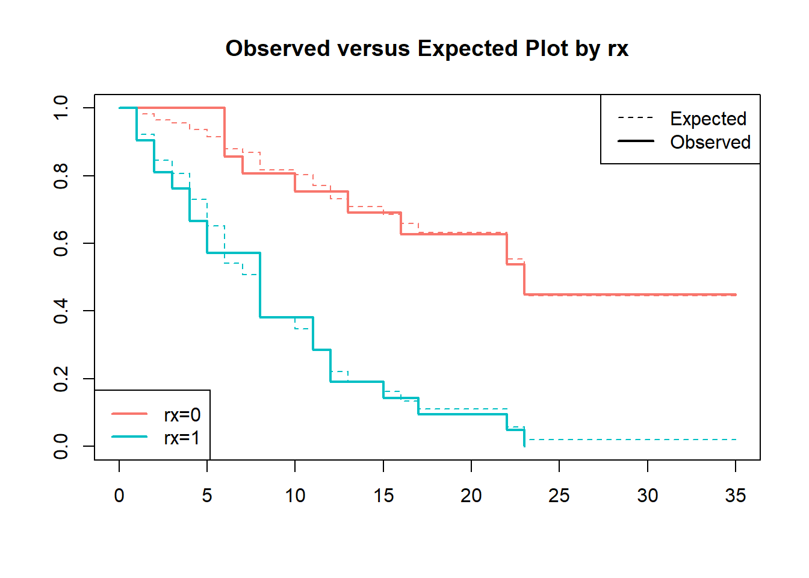
점선으로 나타낸 기대값과 실선으로 나타난 관측값 곡선이 가까우면 비례위험 가정에 적합하며, 두 곡선에 차이가 있으면 비례위험 가정이 위배된다고 할 수 있음
로그-로그 생존곡선이 "얼마나 평행해야 평행한 것인가?"라는 한계가 있는 것과 마찬가지로 관측-기대값 그림 또한 "얼마나 가까워야 가까운 것인가?"라는 문제가 있음
관측값과 기대값의 차이가 심하게 나타날 때 비례위험 가정에 위반된다고 평가하는 것이 바람직 함
fit1=coxph(Surv(time,status)~sex,data=anderson)
OEplot(fit1)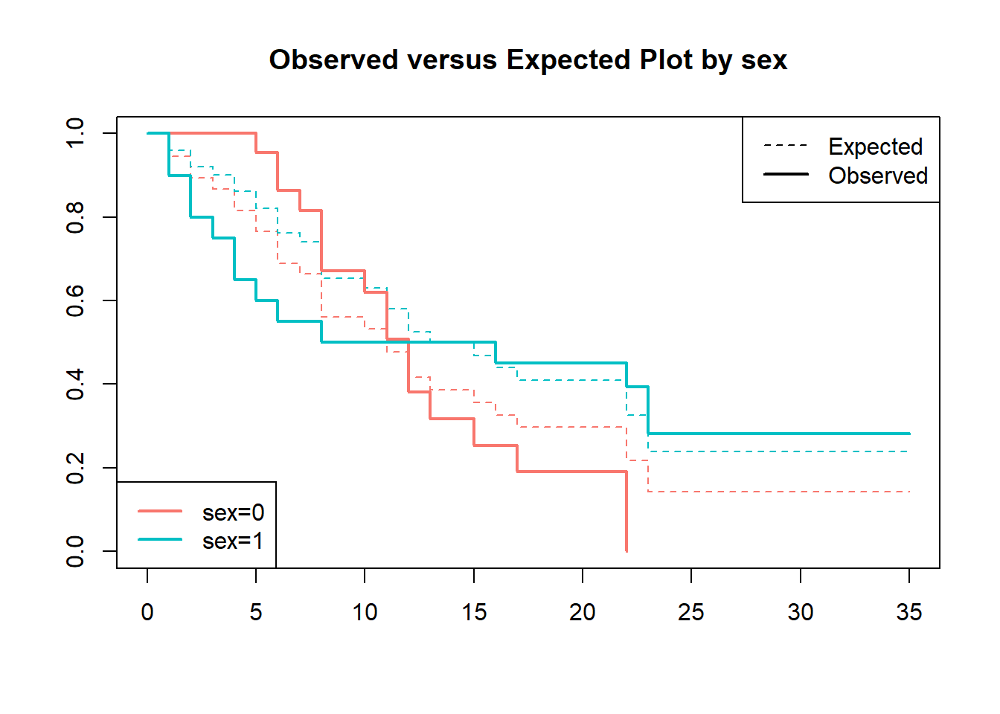
- 성별에 대해서는 비례위험 가정을 만족하지 못할 가능성을 시사해 줌
3.3.2 적합도 검정
적합도 검정은 관심 있는 설명변수의 비례위험 가정에 대한 검정통계량과 p값을 제공해주기 때문에 그래프를 이용한 방법에 비해 보다 객관적인 결과를 제시함
적합도 검정에는 Schoenfeld 잔차를 사용하며, Schoenfeld 잔차는 대상환자 각각에 대하여 이벤트 발생 시 관찰된 예측변수 값에서 예측변수의 가중평균을 빼서 계산
적합도 검정은 특정 예측변수에 대한 Schoenfeld 잔차가 생존시간에 관계없이 일정한지를 검정
fit=coxph(Surv(time,status)~rx+sex+logWBC,data=anderson)
x=cox.zph(fit)
x chisq df p
rx 0.036 1 0.85
sex 5.420 1 0.02
logWBC 0.142 1 0.71
GLOBAL 5.879 3 0.12- rx와 logWBC에 대한 p값은 유의하지 않으나 sex에 대한 p값은 유의한 것으로 나타남
coxzphplot(x)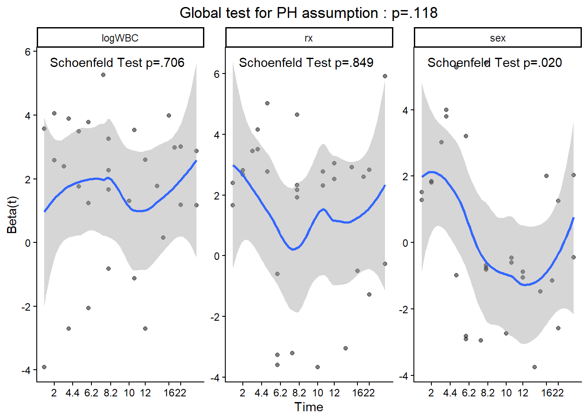
- 이 중 sex에 대한 plot만 그려보면
coxzphplot(x, var="sex", add.lm=T)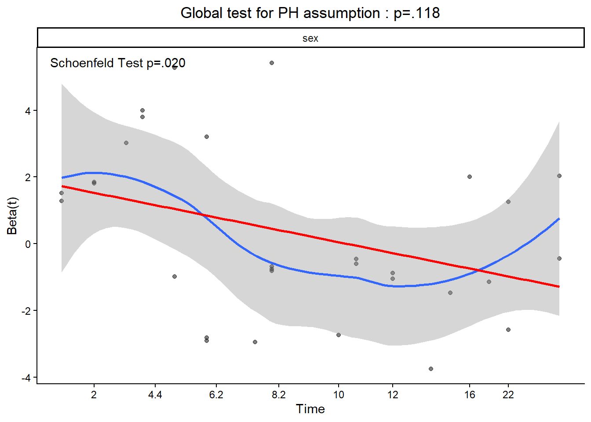
- loess(blue) 회귀곡선에 빨간색의 직선회귀선을 그린 그림으로, 시간이 경과함에 따라서 sex의 위험이 감소하는 것으로 나타남. 이는 시간의 흐름에 따라 sex의 위험이 일정하지 않은, 비례위험 가정을 만족하지 않은 것을 뜻 함
3.4 시간의존 공변량
콕스 PH 모형의 중요한 가정은 연구가 시작될 때 공변량이 정해지며 시간이 지나도 공변량은 변하지 않는다는 것임
하지만 어떤 경우에는 공변량이 시간에 따라 변할 수 있으며, 이를 시간의존 공변량(time-dependent covariate)이라고 함
예를 들어, 백혈병 환자의 사망 시점이 관심 있는 반응변수일 때 골수이식과 같은 중간사건(intermediate event)의 발생 여부는 사망시간을 예측하는 데 매우 중요한 영향을 미칠 수 있음
- 여기서 중간사건은 연구 기간 동안 그 발생 여부가 서로 다르며 발생 시점 또한 다름
- 따라서, 중간사건은 시간의존 공변량으로 간주할 수 있음
시간에 따라 변화하는 공변량을 고려한 Cox PH 모형
\[ log h(t)=\alpha(t)+\beta_1 x_1 +\cdots +\beta_p x_p + \beta_{p+1}x_{p+1}(t) \]
스탠포드 심장이식 연구
시간의존 공변량을 다룰 때 주의할 점은 미래의 공변량 값으로 생존을 예측할 수 없다는 것임
1971년 Clark 등의 연구에서, 심장이식 프로그램에 등록된 환자의 생존에 대해, 심장이식을 받은 환자는 심장이식을 받지 않은 환자에 비해 유의하게 생존이 증가함을 시사함
data(heart,package="survival")
fit=coxph(Surv(futime,fustat)~transplant+age+surgery,data=jasa)
summary(fit)Call:
coxph(formula = Surv(futime, fustat) ~ transplant + age + surgery,
data = jasa)
n= 103, number of events= 75
coef exp(coef) se(coef) z Pr(>|z|)
transplant -1.71711 0.17958 0.27853 -6.165 7.05e-10 ***
age 0.05889 1.06065 0.01505 3.913 9.12e-05 ***
surgery -0.41902 0.65769 0.37118 -1.129 0.259
---
Signif. codes: 0 '***' 0.001 '**' 0.01 '*' 0.05 '.' 0.1 ' ' 1
exp(coef) exp(-coef) lower .95 upper .95
transplant 0.1796 5.5684 0.1040 0.310
age 1.0607 0.9428 1.0298 1.092
surgery 0.6577 1.5205 0.3177 1.361
Concordance= 0.732 (se = 0.031 )
Likelihood ratio test= 45.85 on 3 df, p=6e-10
Wald test = 47.15 on 3 df, p=3e-10
Score (logrank) test = 52.63 on 3 df, p=2e-11#gaze(fit) %>% myft() %>% highlight(i=1)- 이 연구에서 가장 중요한 공변량 transplant는 심장이식을 받은 경우 1, 받지 않은 경우 0으로 입력되었으며, 공변량 transplant의 위험률(hazard ratio)는 0.18로 매우 낮은 p값을 보임
- 이 결과는 심장이식이 환자의 수명을 늘리는 데 매우 효과적임을 시사함
- 하지만, 이 연구의 문제는 심장이식이 시간에 따라 변화하는 공변량이라는 점이며, 환자가 심장이식을 받기 위해서는 심장이식을 받을 수 있을 만큼 오래 살아야 함을 의미함
- 따라서 이 결과는 오래 산 환자(심장이식 받음)가 오래 살지 못한 환자에 비해 오래 살았다는 것을 보여준 것에 지나지 않음
- 이러한 문제에 대한 간단한 해결방법은 랜드마크 시간을 정해 환자를 두 군으로 나누는 것임
- 랜드마크 시간전에 심장이식을 받은 환자들은 환자군으로 하고 심장이식을 받지 못한 환자들은 대조군으로 함
- 이때 중요한 점은 1) 랜드마크 시간까지 생존한 환자들만 연구에 포함시키고 2) 모든 환자들(특히 대조군에 속한 환자들)은 랜드마크 시간 이후에 이식을 받더라도 대조군에 계속 남아 있어야 함
- 랜드마크 30일을 기준으로 한 분석 결과
ind30 <- jasa$futime >= 30
transplant30 <- (jasa$transplant==1) & (jasa$wait.time<30)
fit1=coxph(Surv(futime,fustat)~transplant30+age+surgery,data=jasa,subset=ind30)
summary(fit1)Call:
coxph(formula = Surv(futime, fustat) ~ transplant30 + age + surgery,
data = jasa, subset = ind30)
n= 79, number of events= 52
coef exp(coef) se(coef) z Pr(>|z|)
transplant30TRUE -0.04214 0.95874 0.28377 -0.148 0.8820
age 0.03720 1.03790 0.01714 2.170 0.0300 *
surgery -0.81966 0.44058 0.41297 -1.985 0.0472 *
---
Signif. codes: 0 '***' 0.001 '**' 0.01 '*' 0.05 '.' 0.1 ' ' 1
exp(coef) exp(-coef) lower .95 upper .95
transplant30TRUE 0.9587 1.0430 0.5497 1.6720
age 1.0379 0.9635 1.0036 1.0734
surgery 0.4406 2.2697 0.1961 0.9898
Concordance= 0.618 (se = 0.044 )
Likelihood ratio test= 9.5 on 3 df, p=0.02
Wald test = 8.61 on 3 df, p=0.03
Score (logrank) test = 8.94 on 3 df, p=0.03#gaze(fit1) %>%myft( ) %>% highlight(i=1)- transplant30의 위험률은 0.96(95% CI: 0.55-1.67, p=.882)으로 유의하지 않게 나타남
- 랜드마크 분석에 따르면 심장이식을 받은 환자와 받지 않은 환자 간의 생존차이는 없다고 할 수 있음
- 랜드마크 방법은 적용하기 쉽지만 랜드마크의 크기를 어떻게 정하는지에 대한 뚜렷한 기준이 없음
- 보다 나은 방법은 transplant를 시간의존 공변량으로 사용하는 것임
- transplant 변수를 시간의존 공변량으로 사용하기 위한 변환
tdata=jasa[,-c(1:4,11:14)] #tdata는 변환 중 임시데이터
tdata$futime=pmax(.5,tdata$futime) #futime이 0인 경우 0.5로 바뀜
##wait.time과 futime이 같은 경우 wait.time에서 0.5를 뺀다.
indx={tdata$wait.time==tdata$futime}&{!is.na(tdata$wait.time)}
tdata$id=1:nrow(tdata)
sdata=tmerge(tdata,tdata,id=id,
death=event(futime,fustat),
trans=tdc(wait.time))
final=sdata[,c(7:11,2:3)]
head(final) id tstart tstop death trans surgery age
1 1 0 49 1 0 0 30.84463
2 2 0 5 1 0 0 51.83573
3 3 0 15 1 1 0 54.29706
4 4 0 35 0 0 0 40.26283
5 4 35 38 1 1 0 40.26283
6 5 0 17 1 0 0 20.78576fit2=coxph(Surv(tstart,tstop,death)~trans+surgery+age,data=final)
summary(fit2)Call:
coxph(formula = Surv(tstart, tstop, death) ~ trans + surgery +
age, data = final)
n= 169, number of events= 75
coef exp(coef) se(coef) z Pr(>|z|)
trans -0.07894 0.92410 0.30608 -0.258 0.7965
surgery -0.77035 0.46285 0.35959 -2.142 0.0322 *
age 0.03138 1.03187 0.01392 2.253 0.0242 *
---
Signif. codes: 0 '***' 0.001 '**' 0.01 '*' 0.05 '.' 0.1 ' ' 1
exp(coef) exp(-coef) lower .95 upper .95
trans 0.9241 1.0821 0.5072 1.6836
surgery 0.4629 2.1605 0.2287 0.9365
age 1.0319 0.9691 1.0041 1.0604
Concordance= 0.6 (se = 0.036 )
Likelihood ratio test= 10.78 on 3 df, p=0.01
Wald test = 9.72 on 3 df, p=0.02
Score (logrank) test = 10.05 on 3 df, p=0.02- 시간의존 공변량을 이용한 분석 결과, 심장이식의 HR=0.9241, p=0.7965로 심장이식이 생존을 증가시킨다는 근거를 찾을 수 없음
3.5 SAS 예제
- Example: Colon data
- time: days until event or censoring
- status: censoring status
- rx: treatment; Obs(ervation), Lev(amisole), Lev(amisole_5-FU)
- sex: 1=male, 0:female
- differ: differentiation of tumour (1=well, 2=moderate, 3=poor)
head(colon) id study rx sex age obstruct perfor adhere nodes status differ extent
1 1 1 Lev+5FU 1 43 0 0 0 5 1 2 3
2 1 1 Lev+5FU 1 43 0 0 0 5 1 2 3
3 2 1 Lev+5FU 1 63 0 0 0 1 0 2 3
4 2 1 Lev+5FU 1 63 0 0 0 1 0 2 3
5 3 1 Obs 0 71 0 0 1 7 1 2 2
6 3 1 Obs 0 71 0 0 1 7 1 2 2
surg node4 time etype
1 0 1 1521 2
2 0 1 968 1
3 0 0 3087 2
4 0 0 3087 1
5 0 1 963 2
6 0 1 542 1- Cox proportional hazard model
Proc phreg data=colon;
class rx sex differ;
model time*status(0) = rx sex differ / rl;
hazardratio 'Pairwise' rx / diff=pairwise;
run;
- 비례성 가정 검토: Log-Log vs log(t)
proc lifetest data=colon plots=(lls);
time time*status(0);
strata rx;
run;
- 비례성 가정 검토: Log-Log vs t
Proc phreg data=colon;
class rx sex differ;
model time*status(0) = sex differ;
strata rx;
baseline out=c survival=s loglogs=lls;
run;
proc gplot data=c;
plot lls*time=rx;
symbol1 interpol=join color=black line=1;
symbol2 interpol=join color=blue line=2;
symbol3 interpol=join color=red line=3;
run;
- 비례성 가정 검토: time dependent
data colon2;
set colon;
if rx='Obs' then rx1=1;
else if rx='Lev' then rx1=2;
else if rx='Lev+5FU' then rx1=3;
run;
Proc phreg data=colon2;
model time*status(0) = rx1 sex differ rx_time sex_time differ_time/ ties=exact;
rx_time=rx1*log(time);
sex_time=sex*log(time);
differ_time=differ*log(time);
proportionality_test: test rx_time, sex_time, differ_time;
run;
- 비례성 가정 검토: resample
Proc phreg data=colon;
class rx sex differ;
model time*status(0) = rx sex differ;
assess ph / crpanel resample;
run;


- 시간 의존 공변량: Heart data
head(jasa) birth.dt accept.dt tx.date fu.date fustat surgery age futime
1 1937-01-10 1967-11-15 <NA> 1968-01-03 1 0 30.84463 49
2 1916-03-02 1968-01-02 <NA> 1968-01-07 1 0 51.83573 5
3 1913-09-19 1968-01-06 1968-01-06 1968-01-21 1 0 54.29706 15
4 1927-12-23 1968-03-28 1968-05-02 1968-05-05 1 0 40.26283 38
5 1947-07-28 1968-05-10 <NA> 1968-05-27 1 0 20.78576 17
6 1913-11-08 1968-06-13 <NA> 1968-06-15 1 0 54.59548 2
wait.time transplant mismatch hla.a2 mscore reject
1 NA 0 NA NA NA NA
2 NA 0 NA NA NA NA
3 0 1 2 0 1.11 0
4 35 1 3 0 1.66 0
5 NA 0 NA NA NA NA
6 NA 0 NA NA NA NA- 심장이식을 고려하지 않은 경우
proc phreg data=heart;
model futime*fustat(0)=transplant age surgery;
run;
- 심장이식을 고려한 경우
proc phreg data=heart;
model futime*fustat(0)=plant age surgery;
if wait_time>futime or wait_time=. then plant=0; else plant=1;
run;